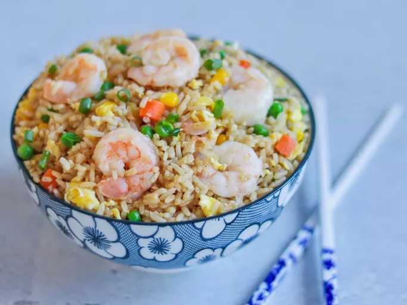

Shrimp Fried Rice
Description
Delicious fried rice to fill up your tummy. This recipe is so simple that even a shrimp can follow!
Recipe from allrecipes.
Ingredients
- 2 tablespoons sesame oil
- 2 tablespoons olive oil
- 1 pound uncooked medium shrimp, peeled and deveined
- 1 cup frozen peas and carrots
- 1/2 cup frozen corn
- 2 cloves garlic, finely minced, or more to taste
- 3 large eggs, lightly beaten
- 4 cups cooked rice
- 3 tablespoons thinly sliced green onions
- 3 tablespoons low-sodium soy sauce, or more to taste
- 1/2 teaspoon salt, or to taste
- 1/2 teaspoon freshly ground black pepper, or to taste
Steps
- Heat sesame oil and olive oil in a large nonstick skillet or wok over medium-high heat. Add shrimp and cook until they are bright pink on the outside and the meat is opaque, about 3 minutes, flipping halfway through.
- Remove shrimp from the skillet using a slotted spoon, allowing oils and cooking juices to remain in the skillet. Place shrimp on a plate and set aside.
- Add peas and carrots and corn to the skillet and cook, stirring intermittently, until vegetables begin to soften, about 2 minutes. Add garlic; cook and stir for 1 minute. Push vegetables to the side of the skillet, pour eggs into the other side, and cook to scramble, stirring as necessary, 3 to 4 minutes.
- Stir shrimp, rice and green onions into the skillet. Drizzle evenly with soy sauce, season with salt and pepper, and stir to combine. Cook until shrimp is reheated through. about 2 minutes